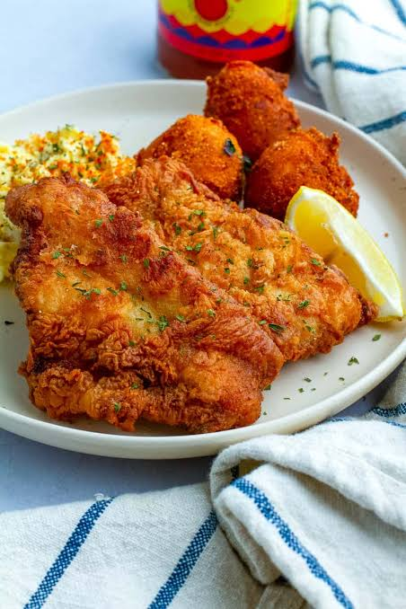

Fried Fish
Fried fish is a popular dish that features fish fillets coated in a seasoned batter and deep-fried until golden brown. It's often served with tartar sauce and lemon wedges.
Ingredients
- 1 lb fish fillets (such as cod or tilapia)
- 1 cup all-purpose flour
- 1 tsp salt
- 1 tsp black pepper
- 1 cup milk
- 1 egg
- Vegetable oil for frying
Instructions
- In a bowl, mix the flour, salt, and pepper.
- Beat the egg and milk together, then add to the flour mixture to create a batter.
- Heat vegetable oil in a deep fryer or large skillet to 350°F (175°C).
- Dip the fish fillets in the batter, ensuring they are fully coated.
- Carefully place the battered fish into the hot oil and fry until golden brown, about 4-5 minutes per side.
- Remove the fried fish from the oil and drain on paper towels.
- Serve hot with tartar sauce and lemon wedges.